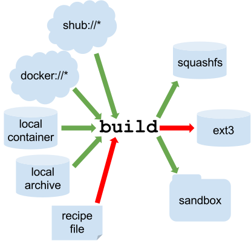

4.2 Build process

4.2.1 Examples
There are different ways to generate Singularity image files. The most common way is so far thanks to existing Docker images already present in public registries.
4.2.1.1 Through registries
4.2.1.1.1 Docker Hub
https://hub.docker.com/r/biocontainers/fastqc
singularity build fastqc-0.11.9_cv7.sif docker://biocontainers/fastqc:v0.11.9_cv74.2.1.1.2 Biocontainers
4.2.1.1.2.1 Via quay.io
https://quay.io/repository/biocontainers/fastqc
singularity build fastqc-0.11.9.sif docker://quay.io/biocontainers/fastqc:0.11.9--04.2.1.1.2.2 Via Galaxy project prebuilt images
singularity pull --name fastqc-0.11.9.sif https://depot.galaxyproject.org/singularity/fastqc:0.11.9--04.2.1.1.3 Sylabs registry
Not as popular so far, but it provides fast download of images.
4.2.1.2 Docker Daemon
If you create your own images (as we did during the course) and you don’t want to share them publicly (and you have not access to any private image registry, either), you can convert your locally built Docker images into Singularity image files.
singularity build fastqc-web-0.11.9.sif docker-daemon://fastqcwww4.2.2 Sandboxing
Instead of generating an image file, it is actually possible to use a whole directory with its contents. This is handy when specific changes may be needed.
singularity build --sandbox ./sandbox docker://ubuntu:18.04
touch sandbox/etc/myetc.conf
singularity build sandbox.sif ./sandbox4.2.3 Singularity recipes
Singularity provides its own build system and recipe syntax. Despite it is actually possible to generate images from scratch (known as bootstraping) thanks to these recipes, this is at time of writing far slower than converting from Docker ones. Docker has the advantage of saving every action line as a cached image. That is not happening with Singularity.
When using recipes, it’s mandatory to have administrator permissions (e.g., as beeing root or via sudo).
In any case, it can still be useful to boostrap an image derived from a previously existing one. Below we provide two common approaches:
4.2.3.1 Docker bootstrap
Instead of converting a Docker image into a Singularity one, it’s possible to use one as a base one and modify it by using Singularity recipe syntax.
BootStrap: docker
From: biocontainers/fastqc:v0.11.9_cv7
%runscript
echo "Welcome to FastQC Image"
fastqc --version
%post
echo "Image built"sudo singularity build fastqc.sif docker.singularitysingularity run. This is useful if you want to hide from the user the complexity of a command-line path or an included custom script.
4.2.3.2 Debian bootstrap
Alternatively, we can build the whole image from Debian/Ubuntu distribution. This will normally take a while.
BootStrap: debootstrap
OSVersion: bionic
MirrorURL: http://fr.archive.ubuntu.com/ubuntu/
Include: build-essential curl python python-dev openjdk-11-jdk bzip2 zip unzip
%runscript
echo "Welcome to my Singularity Image"
fastqc --version
multiqc --version
bowtie --version
%post
FASTQC_VERSION=0.11.9
MULTIQC_VERSION=1.9
BOWTIE_VERSION=1.3.0
cd /usr/local; curl -k -L https://www.bioinformatics.babraham.ac.uk/projects/fastqc/fastqc_v${FASTQC_VERSION}.zip > fastqc.zip
cd /usr/local; unzip fastqc.zip; rm fastqc.zip; chmod 775 FastQC/fastqc; ln -s /usr/local/FastQC/fastqc /usr/local/bin/fastqc
cd /usr/local; curl --fail --silent --show-error --location --remote-name https://github.com/BenLangmead/bowtie/releases/download/v$BOWTIE_VERSION/bowtie-${BOWTIE_VERSION}-linux-x86_64.zip
cd /usr/local; unzip -d /usr/local bowtie-${BOWTIE_VERSION}-linux-x86_64.zip
cd /usr/local; rm bowtie-${BOWTIE_VERSION}-linux-x86_64.zip
cd /usr/local/bin; ln -s ../bowtie-${BOWTIE_VERSION}-linux-x86_64/bowtie* .
curl --fail --silent --show-error --location --remote-name https://bootstrap.pypa.io/pip/2.7/get-pip.py
python get-pip.py
pip install numpy matplotlib
pip install -I multiqc==${MULTIQC_VERSION}
echo "Biocore image built"
%labels
Maintainer Biocorecrg
Version 0.1.0sudo singularity build fastqc-multi-bowtie.sif debootstrap.singularity/usr/share/debootstrap/scripts/ for more details. For Debian, instead of Ubuntu, you can replace mirrorURL with https://ftp.debian.org/debian/ More details at: https://sylabs.io/guides/3.7/user-guide/appendix.html#build-debootstrap
4.2.4 Remote building
This allows us to build a Singularity image without using our own computer. This is convenient if your machine has not many resources or if you don’t have administrator privileges.
- We need to create a https://cloud.sylabs.io/ account first.
- In order to use it our username and passwords we generate a token at https://cloud.sylabs.io/auth/tokens and copy its contents to a file (e.g.,
singularity.token). Then we use in the command-line below:
Output
(base) [ec2-user@ip-172-31-47-200 ~]$ singularity remote login –tokenfile singularity.token
INFO: Access Token Verified!
INFO: Token stored in /home/ec2-user/.singularity/remote.yaml
- Once we are authenticated with our access token, we can build an image:
- Since we are already authenticated, we can take advantage to push a Singularity image in our account, similarly to what we did with Docker. We use
-Uso we do not sign the image.